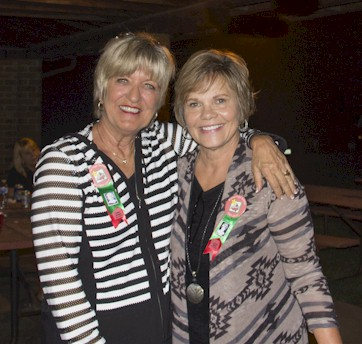
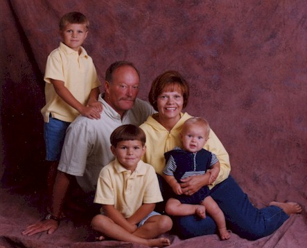
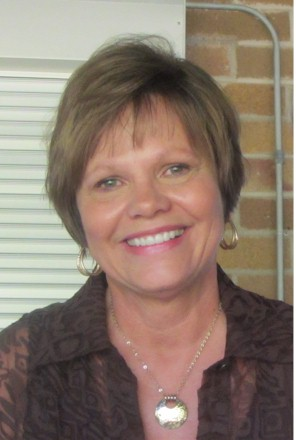
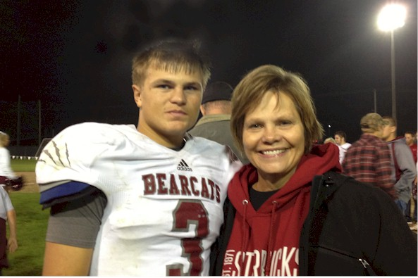
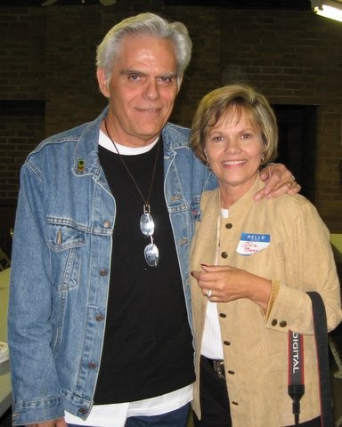
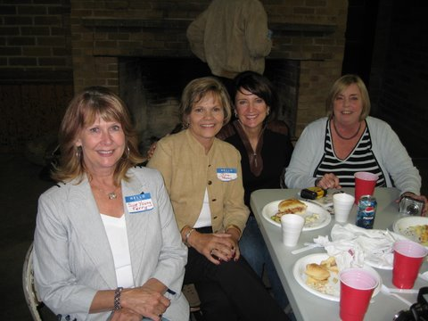
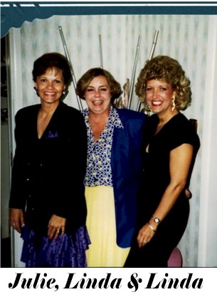
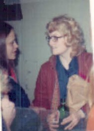
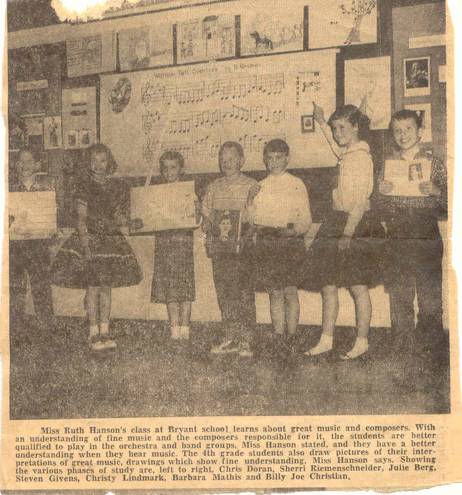

BHS 1967 Class Member
Julie Marjean (Berg) Fitzpatrick
Click to Email
Click to Email
 2022 - Friends for 65 years, Susan Harrison, Julie Berg, Linda Byers and Davi Mondt |
|
 1967 Click for Bryant Elementary Photo |
 2017 - 50th Reunion with Linda "Byers" Blackburn |
|  husband Dave and grandkids, Toby, Elijah and Joe Johnson |
 2012 |
|  2013 with Grandson Tobi |
 1954 - Page School Physicals |
|  Jim Buckels & Julie at 40th Reunion - 2007 |
 Sue, Julie, Donna, & Linda at 40th Reunion - 2007 |
|  1982 Reunion - Julie, Linda & Linda |
 1972 - Julie at Davi Mondt's bachelorette party |
|  BNR Article 1959? |